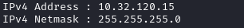
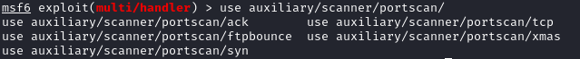

Map Internal Network
Map the network
First we run ifconfig/ipconfig to know which is the the netmask of the network
•
meterpreter Arp scan Then we can run the ARP scan on the network
meterpretr> run arp_scanner -r 10.32.120.0/24
◇ With netdiscover(linux):
netdiscover -i tap0 -r 172.16.5.0./24
With ARP protocol host discovery cannot be performed on a different networks.
Host discovery with ARP just works when all hosts are on the same broadcast domain.
This because the ARP Scan works by sending ARP requests to the broadcast address ff:ff:ff:ff:ff:ff asking for specific IP address range (if specified).
ARP is a protocol used for resolution of network layer addresses (IP address) into link layer addresses (MAC address). It works on the layer 2 of the OSI
•
Metasploit Port scan  meterpreter> background
msf> use auxiliary/scanner/portscan/tcp
msf> set rhosts 10.32.120.17
msf> run
msf>
◇ Scan entire network
msf> use auxiliary/scanner/portscan/tcp
msf> set rhosts 10.32.120.0/24
msf> set THREADS 10
msf> set PORTS 139,445
msf> run
msf>